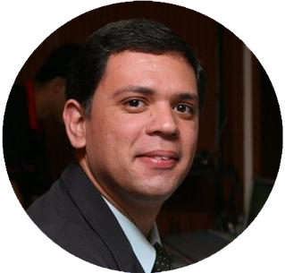

em Informática Aplicada
Proposta destinada à criação do Programa de Mestrado Profissional no âmbito do INF. Trata-se de uma modalidade de Pós-Graduação Stricto Sensu voltada para a capacitação de profissionais, nas diversas áreas do conhecimento, mediante o estudo de técnicas, processos, ou temáticas que atendam a alguma demanda do mercado de trabalho. O objetivo é obter o credenciamento do programa junto às instâncias internas (UFG) e externas (Capes e MEC), para iniciar as atividades a partir de 2018.

Carga horária: 30h
Sinopse:
Na modernidade, o desenvolvimento organizacional depende fundamentalmente dos sistemas de informação. Estes, por sua vez, estão imbricados em cenários complexos, especialmente porque envolvem domínios de atividade humana e porque sofrem com a emergência dos pressupostos da imprevisibilidade, da instabilidade e da incerteza. Com os sistemas de inteligência de negócio não é diferente. Esta disciplina apresenta os arquétipos que orientam o desenvolvimento de sistemas de informação, em geral, e sistemas de BI, em particular, e servir de parâmetro de avaliação para a condução de projetos.
Metodologia:
● O processo de ensino-aprendizagem será orientado pela aplicação de diversas técnicas, de modo mesclado, coerente com o tipo de conteúdo e contexto de aula.
● A disciplina será desenvolvida com aulas expositivas, dialogadas, com debates e aulas práticas utilizando uma abordagem participativa e construtivista.
● Um Ambiente de Aprendizagem Virtual será utilizado para desenvolver atividades acadêmico-pedagógicas complementares, incluindo interações síncronas e assíncronas, sistematização do aprendizado.
Bibliografia Sugerida:
● Critchlow, Terence; van Dam, Kerstin kleese. Data-Intensive Science. CRC Press, 2013.
● Senge, Peter M. A Quinta Disciplina - Arte e Prática da Organização que Aprende. 29.ed., Rio de Janeiro: BestSeller, 2013.
● Valença, Antonio Carlos. Aprendizagem Organizacional - 123 Aplicações Práticas de Arquétipos Sistêmicos. São Paulo: Senac, 2011.
● Ackoff, Russell Lincoln. Planejamento empresarial. Rio de Janeiro: Livros Técnicos e científicos, 1975. 114 p.
● Beer, Stafford. Cibernética e administração industrial. Rio de Janeiro: Zahar, 1969.
● Forrester, J. Principles of Systems. MIT Press, Cambridge, Mass, 1968.
● Hardoon, David Roi; Shmueli, Galit. Getting Started with Business Analytics. CRC Press, 2007.
● Sterman, John. Business Dynamics: Systems Thinking and Modeling for a Complex World. McGraw-Hill Education, 2000.
● Vasconcellos, M. J. Pensamento Sistêmico: O Novo Paradigma da Ciência. 10.ed. rev. e atual, Campinas-SP: Papirus, 2013.
Carga horária: 15h
O designer sabe que para identifcar os reais problemas e solucioná-los de maneira mais efetiva, é preciso abordá-los sob diversas perspectivas e ângulos. Assim, prioriza o trabalho colaborativo entre equipes multidisciplinares, que trazem olhares diversifcados e oferecem interpretações variadas sobre a questão e, assim, soluções inovadoras. Neste curso, será promovida a aplicação de metodologias inovadoras de design em projetos de produtos e de serviços. Além disso, proporcionará o desenvolvimento das habilidades e competências do pensamento sistêmico nos profissionais que se relacionam diretamente com empresas, buscando a inovação em projetos de tecnologias.
● Atividades de preleção estarão intercaladas com atividades práticas em laboratório. Implica numa interação aluno-objeto para construção do conhecimento baseada na realização de ações concretas.
● No decorrer da disciplina está prevista a aplicação de técnicas ativas e de problematização, além de estudos de caso.
● Brown, Tim, Katz, Barry. Design Thinking. Uma Metodologia Poderosa Para Decretar o Fim das Velhas Ideias. Elsevier, 2010.
● Ferreira, Luis, Pinheiro, Tennyson. Design Thinking Brasil. Elsevier, 2011.
● Stickdorn, Marc. Isto É Design Thinking de Serviços. Fundamentos, Ferramentas, Casos. Bookman, 2014.
● Júdice, Andrea Castello Branco; Júdice, M.O. . Thoughts and reflection on social design: A significant field of design.. In: Sattu Miettinen. (Org.). Design your action: Social design in practise. Helsinki: Univirsity of Art and Design Helsinki, 2007, v. , p. 44-53.
● Martin, Roger L. Design de Negócios. Elsevier, 2010.
● Kelley, David; Kelley, Tom. Confiança Criativa. HSM, 2014.
● Melo, Adriana; Abelheira, Ricardo. Design Thinking & Thinking Design. Novatec, 2015.
Buscar uma estratégia de inovação em uma empresa exige a mobilização de muitos esforços e recursos. Mobilizar e engajar as pessoas em prol de um novo empreendimento é um dos fatores críticos de sucesso para implementar uma boa estratégia de inovação. Viabilizar as interações entre pessoas, equipes do projeto e entre empresas, com base no oferecimento de incentivos que estimulem o engajamento das partes envolvidas e afetadas, de maneira lúdica, é o que caracteriza a Gameficação.
● Chou, Yu-kai. Actionable Gamification - Beyond Points, Badges, and Leaderboards. Octalysis Media, 2015.
● Fiani, Ronaldo. Teoria dos Jogos. 4a. Ed., Elsevier, 2015.
● Kapp, Karl M. The Gamification of Learning and Instruction: Game-based Methods and Strategies for Training and Education. Pfeiffer, 2012.
● Alves, Flora. Gamification - Como criar experiências de aprendizagem engajadoras. Um guia completo. DVS Editora, 2014.
● Zichermann, Gabe; Cunningham, Christopher. Gamification by Design: Implementing Game Mechanics in Web and Mobile Apps. O'Reilly Media, 2011.
Um dos fatores menos evidentes, que torna difícil a decisão nas ações humanas, é a complexidade do mundo moderno. Os problemas de decisão são considerados complexos quando compreendem vários elementos ou aspectos distintos, cujas múltiplas formas possuem relações de interdependências, dificultando sua clareza e entendimento. Nesse sentido, a disciplina visa abordar métodos e abordagens de análise de decisão pautadas pelos aspectos comportamentais.
● Atividades de preleção estarão intercaladas com atividades com viés prático.
● Bazerman, Max H. Processo Decisório. 8a. ed., Rio de Janeiro: Elsevier, 2014, 424p.
● Pammi V. S. Chandrasekhar; Srinivasan, Narayanan. Decision Making: Neural and Behavioural Approaches. 1st ed., Elsevier, 2013.
● Wilhelms, Evan A.; Reyna, Valerie F. Neuroeconomics, Judgment, and Decision Making. 1st ed., Psychology Press, 2014.
● Bazerman, Max H.; Moore, Don A. Judgment in Managerial Decision Making. 8th ed., Wiley, 2013.
● Kahneman, Daniel; Slovic, Paul; Tversky, Amos. Judgment under Uncertainty: Heuristics and Biases. 1st Ed., Cambridge University Press, 1982.
● March, James G.; Simon, Herbert A. Organizations. 2nd Ed., Wiley-Blackwell, 1993.
● Simon, Herbert A. Administrative Behavior: A Study of Decision-making Processes in Administrative Organisations. 4th Ed., Free Press, 2013.
● Tversky, Amos. Preference, Belief, and Similarity: Selected Writings. A Bradford Book, 2003.
Os Sistemas inteligentes de apoio à decisão (SIAD) estão sendo aplicados de forma exitosa nas mais diversas áreas de negócio, incluindo previsões, otimizações, análise de risco, controle, inferência, modelagem e detecção de fraude. As soluções baseadas nesses sistemas subsidiam os gestores, agentes de decisão e decisores em aplicações complexas e extensas, consideradas difíceis e muito restritivas. Nesta disciplina serão estudadas as principais técnicas empregadas para construção de SAD e SIAD.
● Burstein, F.; Holsapple, C. W. Handbook on Decision Support Systems 1, Basic Themes, Springer, 2008. Disponível on-line em: .
● Burstein, F.; Holsapple, C. W. Handbook on Decision Support Systems 2, Variations, Springer, 2008. Disponível on-line em: .
● Poole, David; Mackworth, Alan. Artificial Intelligence: Foundations of Computational Agents. Cambridge University Press, 2010. Disponível on-line em:
● Daumé III, Hal. A Course in Machine Learning. University of Maryland. 2012. Disponível on-line em:
● Grigorie, Lucian. Fuzzy Controllers, Theory and Applications, INTECH, 2011.
● Luke, Sean. Essentials of Metaheuristics. Lulu, 2nd Ed. 2013. Disponível on-line em:
● Nilsson, Nils J. The Quest for Artificial Intelligence a History of Ideas and Achievements. Cambridge University Press, 2010. Disponível on-line em:
● Vizureanu, Petrica. Expert Systems, INTECH, 2010. Disponível on-line em:
Os modelos estatísticos descritivos e inferenciais subsidiam a Ciência de Dados, capacitando os pesquisadores para extrair conhecimento e obter melhores resultados de grandes projetos. Tornam propícias as estratégias de análise aplicada em dados não convencionais: grandes volumes, variedades e heterogeneidade. A estatística é usada para a exploração dos dados por meio da descrição de várias técnicas de análise de dispersão e de medida central (média, mediana, moda e faixa de valores) combinadas com gráficos (Histogramas, Frequência, Barra, BoxPlot, Dispersão). O surgimento da mineração de dados é fundamento na estatística, ou seja, dentre outros pilares, o estudo numérico de dados relacionados subjaz a mineração de dados.
● Belfiore, Patrícia. Estatística, 1a. Ed., Elsevier, 2015.
● Fávero, Luiz P.; Belfiore, Patrícia. Manual de Análise de Dados. 2a. Ed., Elsevier, 2016.
● Wooldridge, Jeffrey M. Introductory Econometrics: A Modern Approach. South Western Educational Publishing, 2016.
● Fávero, Luiz P. Análise de Dados - Modelos de Regressão com Excel, STATA e SPSS. 1a. Ed., Elsevier, 2015.
● Lapponi, Juan. Estatística Usando Excel, 4a. Ed., Elsevier, 2005.
Em meio aos grandes aglomerados de dados disponíveis no âmbito organizacional, muitos são os desafios para se buscar a estruturação de informações e a consequente criação de conhecimentos passíveis de serem sistematizados e servirem de substratos para a ação. Portanto, não é uma jornada trivial partir dos dados brutos e obter ao final do ciclo de transformações sucessivas aprendizado, insights e inovações. É neste contexto em que esta disciplina se justifica, face a necessidade de uso das unidades informacionais para tomada de decisões, implicando a geração de conhecimentos organizacionais.
● Choo, C. W. A organização do conhecimento: Como as organizações usam a informação para criar significado, construir conhecimento e tomar decisões. São Paulo; Ed. do SENAC, 2006.
● McGee, J.;Prusak. Gerenciamento Estratégico da Informação. Rio de Janeiro: Ed. Campus, 1999.
● Alvarenga Neto, R. Gestão do Conhecimento em Organizações: Proposta de Mapeamento Conceitual Integrativo. São Paulo: Saraiva, 2008.
● Davenport, Thomas H.; Prusak, Laurence. Conhecimento empresarial: como as empresas gerenciam o seu capital intelectual. Rio de Janeiro: Campus, 1998.
● Johnson, J. D. Gestão de Redes de Conhecimento. São Paulo: Ed. SENAC, 2009.
● Nonaka, I.; Takeuchi, H. Criação de conhecimento na empresa. Rio de Janeiro: Campus, 1997.
● Souto, Leonardo Fernandes. Gestão da Informação e do Conhecimento: Práticas e Reflexões. Interciência, 1a Edição, 2013.
● Terra, J. C. C. Gestão do conhecimento: o grande desafio empresarial. 3. ed. São Paulo: Negócio Editora, 2001.
Arquitetura da informação: histórico, conceitos e definições; Necessidades da informação e comportamento de busca; Sistemas de organização: metadados, vocabulários controlados, taxonomias, thesaurus, e ontologias; Tipos de sistemas de busca, rotulagem e navegação; Prototipação de baixa e alta fidelidade; Avaliação de arquitetura da informação; Ferramentas e softwares aplicados à Arquitetura da Informação.
● Atividades de preleção estarão intercaladas com atividades com viés prático. Implica numa interação aluno-objeto para construção do conhecimento baseada na realização de ações concretas.
● Batley, Sue. Information architecture for information professional. Chandos: Oxford 2007.
● Gilchrist, Alan; Mahon, Barry; Morville, Peter. Information Architecture. Neal-Schuman Publishers, 2004.
● Rosenfeld, Louis; Morville, Peter; Arango, Jorge. Information Architecture: For the Web and Beyond. O'Reilly Media, 2015.
● Lazar, Jonathan. Universal usability: Designing computer interfaces for diverse user populations. Hoboken, NJ.: John Wiley & Sons, 2007.
● Nielsen, Jakob; Loranger, Hoa. Usabilidade na web: projetando web sites com qualidade. Rio de Janeiro: Elsevier, 2007.
Fundamentos de Big Data e Big Analytics. Ecossistema de Big Data. Arquitetura e Soluções Comerciais Hadoop. Introdução ao Spark. Bancos de dados NoSQL. Como as empresas estão utilizando Big Data.
● Michael Minelli, Michele Chambers, Ambiga Dhiraj. Big Data, Big Analytics: Emerging Business Intelligence and Analytic Trends for Today's Businesses. Wiley CIO Series. 2013
● White, Tom (2012). Hadoop: The Definitive Guide (3rd ed.). O'Reilly.
● EMC Education Services. Data Science and Big Data Analytics: Discovering, Analyzing, Visualizing and Presenting Data. John Wiley & Sons. 2014
● Venner, Jason (June 22, 2009). Pro Hadoop (1st ed.). Apress. p. 440. ISBN 1-430-21942-4
● McCreary, Dan; Kelly, Ann (2013). Making Sense of NoSQL: A guide for managers and the rest of us.
● Wiese, Lena (2015). Advanced Data Management for SQL, NoSQL, Cloud and Distributed Databases. DeGruyter/Oldenbourg.
● Sadalage, Pramod; Fowler, Martin (2012). NoSQL Distilled: A Brief Guide to the Emerging World of Polyglot Persistence. Addison-Wesley.
Diferentemente do que é feito nos modelos estatísticos, sejam eles Clássicos ou Bayesianos, na Análise Exploratória de Dados (AED) não há a imposição de um modelo aos dados, mas sim uma atividade de mineração nos dados que pode, eventualmente, indicar qual o melhor modelo. O modelo de AED vai além do uso descritivo da estatística, procura olhar de forma mais profunda os dados, sem resumir muito a quantidade de informações. A finalidade, portanto, é examinar os dados previamente à aplicação de qualquer técnica estatística. Desta forma o analista consegue um entendimento básico de seus dados e das relações existentes entre as variáveis analisadas.
● Tukey, John W. Exploratory Data Analysis. Pearson, 1977.
● Jain, A. K., Dubes, R. C., Algorithms for Clustering Data, Prentice Hall, 1988.
● Xu, R., Wunsch, D., Clustering, IEEE Press, 2009.
● Gan, G., Ma, C., Wu, J., Data Clustering: Theory, Algorithms, and Applications, SIAM Series on Statistics and Applied Probability, 2007.
● Kogan, J., Introduction to Clustering Large and High Dimensional Data, Cambridge University Press, 2006.
● Everitt, B. S., Landau, S., Leese, M., Cluster Analysis, Hodder Arnold Publication, 2001.
● Arabie, P., Hubert, L. J., Soete, G., Clustering and Classification, World Scientific Publ., 1996
● Höppner, F., Klawonn, F., Kruse, R., Runkler, T., Fuzzy Cluster Analysis,1999
● Kaufman, L., Rousseeuw, P. J., Finding Groups in Data An Introduction to Cluster Analysis, Wiley, 1990.
● Hartigan, J. A., Clustering Algorithms, John Wiley & Sons, 1975.
● Anderberg, M. R., Cluster Analysis for Applications, Academic Press, 1973
A área de Data Mining (ou Mineração de Dados) teve início nos anos de 1990 como uma importante subárea de estudo em bancos de dados. O objetivo é a extração de padrões e conhecimento úteis e interessantes que se encontram "escondidos" em grandes volumes de dados. Data Mining tem integrado (com sucesso) técnicas das áreas de bancos de dados, estatística e inteligência artificial. Nesta disciplina apresentamos a arquitetura, as principais práticas e o delineamento de processos de mineração de dados no contexto da inteligência de negócios, metodologias para preparação dos dados, interpretação de seus resultados e assimilação dos conhecimentos obtidos de forma automática. As organizações, em geral, requistiam soluções de mineração de dados para: detectar fraudes, minimizar riscos, antecipar demanda de recursos, aumentar a taxa de resposta de campanhas de marketing, minimizar atritos com clientes e avaliação de desempenho organizacional.
● Pang-Ning Tan, Michael Steinbach, Vipin Kumar: Introduction to Data Mining. Addison-Wesley, 2006.
● Anand Rajaraman, Jure Leskovec, Jeffrey D. Ullman - Mining Massive Datasets, Cambridge University Press, 2012.
● Mohammed J. Zaki, Wagner Meira Jr. Data Mining and Analysis: Fundamental Concepts and Algorithms - Cambridge University Press, 2014.
● Han, J.; Kamber, M. Data Mining: Concepts and Techniques. 2nd Ed., Morgan Kaufmann, 2006.
● Gama, J. Knowledge Discovery from Data Streams. Chapman & Halll. Data Mining and Knowledge Discovery Series, 2010.
● Witten, I. H. ; Frank, E. Data Mining: Practical Machine Learning - Tools and Techniques. 2nd Ed., Morgan Kaufmann, 2005.
Um dos grandes desafios do mundo corporativo nesta era da informação é manter seus depósitos de dados digitais, que servem para armazenar informações detalhadas relativamente à sua operação, criando e organizando relatórios e consultas por meio de históricos que são depois usados pela própria empresa para ajudar a tomar decisões importantes com base nos fatos revelados. Pensando nisso, a disciplina de Modelagem e Arquitetura de Data Warehouse propiciará o conhecimento técnico para consecução de projetos de BI, com ênfase na armazenagem, organização e estruturas de acesso aos dados.
● Ponniah, Paulraj - Data warehousing fundamentals for IT professionals. John Wiley & Sons, Inc. 2nd Edition
● Kimball, Ross. "The Data Warehouse Toolkit: The Complete Guide to Dimensional Modeling (Second Edition)", Wiley, 2002. ISBN 0471200247.
● Venerable, Michael and Adamson, Christopher. Data Warehouse Design Solutions. Wiley, 1998.
● Kimball, Caserta. "The Data Warehouse ETL Toolkit", Wiley. 2004. ISBN 0764567578.
● Kimball, et al. "The Data Warehouse Lifecycle Toolkit", Wiley, 1998. ISBN 0471255475.
● Oliveira, Wilson Jose. "Data Warehouse", 2002, Ed. Bookstore Livraria Ltda.
● Data Warehousing in the Age of Big Data
● Adamson, Christopher. Star Schema The Complete Reference, 1997. 1st Edition Mc Graw Hill.
● Mastering Data Warehouse Design: Relational and Dimensional Techniques
Técnicas para inferir sentimentos baseadas em dicionários léxicos. Aprendizado de máquina supervisionado e não supervisionado. Processamento de linguagem natural.
● Bing, Liu. “Sentiment Analysis: mining opinions, sentiments, and emotions”. Cambridge University Press, 2015.
● Bing, Liu. “Sentiment Analysis and Opinion Mining”. Morgan & Claypool, May 2012.
● Pang, Bo and Lee, Lillian. Opinion Mining and Sentiment Analysis, Ebook in Foundations and Trends in Information Retrieval, Vol. 2, Nos. 1–2 (2008).
● Tom Mitchell, Machine Learning, 1997, McGraw¬Hill
● Faceli, Katti; Lorena, Ana Carolina; Gama, João; de Carvalho, A. C. P. L. F. Inteligência Artificial - Uma Abordagem de Aprendizado de Máquina. 1. ed. Rio de Janeiro: LTC, 2011
● Alpaydin, E. (2004). Introduction to Machine Learning. MIT Press
● Bishop, C. M. (2006). Pattern Recognition and Machine Learning. Springer
● Marsland, S. (2009). Machine Learning: An Algorithmic Perspective, Chapman & Hall/Crc Machine Learning & Pattern Recognition
● Bird, Klein and Loper (2009), Natural Language Processing with Python, 1nd Edition (Python 2), 2nd Edition (Python 3).
Análise léxica. Análise sintática. Análise semântica de linguagem natural.
● C.D. Manning and H. Schütze. “Foundations of statistical natural language processing”. 1999, MIT Press.
● E. Reiter e R. Dale. Building natural language generation systems. 2000, Cambridge University Press.
● J. Allen. “Natural Language Understanding”. 1995, Addison-Wesley.
● Allen, J. Natural language understanding. 2.ed. Menlo Park: The Benjamin/Cummings, 1995. 574p. ARARIBÓIA, G.
● Inteligência Artificial: um curso prático. Rio de Janeiro: LTC,1989. 282p.AMBLE, T.
● Logic programming and knowledge engineering. Wokingham:Addison-Wesley, 1987. 281p.
● S. Russell & P. Norvig. Artificial Intelligence: a Modern Approach, 1995, Prentice-Hall.
● Wallace, M. Communicating with databases in natural language. England: EllisHorwood, 1984. 170p.
Domínios de arquitetura: negócio, social, comportamental, processos, serviços, aplicação, dados, informação e técnica. Design de sistemas de BI centrado na modelagem de arquiteturas. Da estruturação de problemas a viabilização de sistemas de BI.
● Foreman, J. W. (2014), Data smart: using data science to transform information into insight, John Wiley & Sons, Indianápolis, E. U. A.
● Provost, F.; Fawcett, T. (2013). Data science for business, O'Reilly, Sebastopol, E. U. A.
● Sauter, V. L. (2010), Decision Support Systems for Business Intelligence, John Wiley & Sons, 2a ed., Nova Jersey, E. U. A.
● Haan, A.; Heer, P. (2015). Solving complex problems: professional group decision-making support in highly complex situations, eleven, 2a ed., Holanda.
● Ivie, S. (2015), Building Dynamics CRM 2015 Dashboards With Power BI, Packt Publishing: Birmingham, Inglaterra.
● Marr, B. (2015). Big Data: using smart big data analytics and metrics to make better decisions and improve performance, John Wiley & Sons, Chichester, Inglaterra.
● Shriparv, S. (2014). Learning Base: learn the fundamentals of HBase administration and development with the help of real-time scenarios, Packt Publishing: Birmingham, Inglaterra.
● Zumel, N.; Mount, J. (2014). Practical data science with R, Manning, Nova Iorque, E. U. A.
Fundamentos e modelos de arquitetura de computação em nuvem (cloud computing). Tipificação de serviços e soluções de cloud computing. Projetos de migração e implantação de cloud computing: aspectos de funcionalidade, desempenho e segurança. Soluções para negócios de pequeno e médio porte.
● Erl, T.; Puttini, R. Cloud Computing: Concepts, Technology & Architecture. Prentice Hall, 2013.
● Kavis, Michael J. Architecting the Cloud: Design Decisions for Cloud Computing Service Models (SaaS, PaaS, and IaaS). Wiley, 2014.
● Ruparelia, N. B. Cloud Computing. The MIT Press, 2016.
Casos de negócio e modelagem de requisitos para implementação de projetos de Business Intelligence (BI). Requisitos de negócio, de aplicação e de infraestrutura. BIaaS – BI como serviço. Self-service BI. BI mobile. Modelagem de Arquiteturas de Sistemas de BI. Proposta metodológica para projetos de BI. Desenvolvimento de projetos de sistema de apoio à decisão centrado em BI e Big Data.